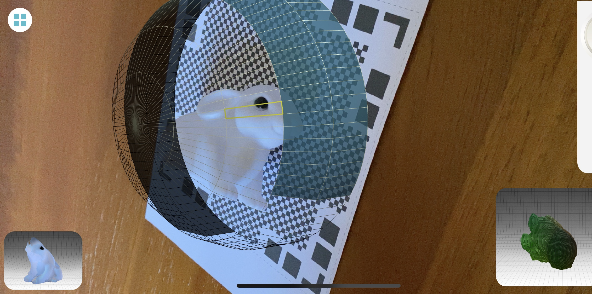
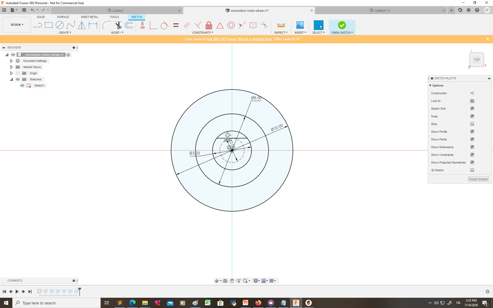

Topic 6: 3D design & printing
3D SCANNING
I have tried three different apps for 3D scanning: "ScandyPro", "Capture" and "Qlone".
"ScandyPro" and "Capture" only work with front camera, which makes it really difficult to see what you are scanning if want to scan something else than your face. So I used "Qlone" that allaws you to scann using your back camera.
Firstly I have printed the AR matt from Qlone website:
Qlone Mat
FIRST SCAN:


SECOND SCAN:

3D CLONE:

3D DESIGNING & PRINTING
I have designed on fusion 360 a component that I will need for my final project to connect the servo motor to a straw.
This is the sketch of my component:
 STL filesliced gcode